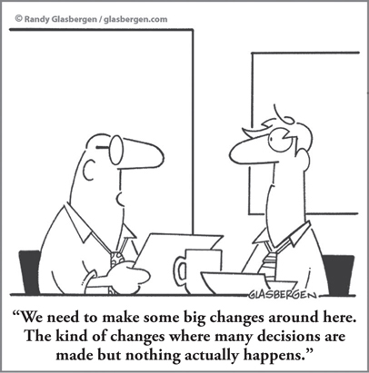

CHAPTER 19
Making Change Work: How to Break Through the Mindset Barrier

CHAPTER HIGHLIGHTS
 We all have already formed mindsets or mental maps that become our point of reference as we look at the world.
We all have already formed mindsets or mental maps that become our point of reference as we look at the world.
 To facilitate organizational change successfully, you have to understand how mindsets create resistance to change.
To facilitate organizational change successfully, you have to understand how mindsets create resistance to change.
 People with different thinking preferences react to change in different ways.
People with different thinking preferences react to change in different ways.
 Communication strategies concerning change need to accommodate the full range of thinking preferences.
Communication strategies concerning change need to accommodate the full range of thinking preferences.
 Change is a Whole Brain process.
Change is a Whole Brain process.
I magine that you are in recovery after a triple bypass. You are not feeling your best, but at least you are alive. You open your eyes, only to see your doctor leaning over you and checking your pulse. He smiles and says, “Welcome back.” You try to smile back. He then says, “I hope you will learn from this. You need to take better care of yourself. You need to change your lifestyle.” You nod your head and mumble, “Of course I will.”
The reality is that if you are like most people, you will not! According to Dr. Edward Miller, dean of the medical school and CEO of the hospital at Johns Hopkins University, 90 percent of people who have bypass surgery do not change their lifestyles.1 If 90 percent of people do not change when faced with a life-threatening situation, imagine how few people change for smaller, less important things. And if it is so hard to get one person to change, imagine how hard it can be to get a group to change. And it is even harder to change an entire organization, made up of people with different agendas, different mindsets, and different ideas.
Changing your own mind is hard enough. Changing someone else’s is almost impossible. When he was a new CEO, Jack Welch of General Electric once complained that trying to bring about change “was like running into a brick wall…. I give all these speeches, but nothing ever happens.”
Trying to make change happen isn’t just a cause of frustration in the senior ranks. HBDI master facilitator Cynthia Radford2 shares a story that’s all too common in organizations: a manager was hired to help the company she was working with innovate its processes and approaches, to make some long overdue changes to “how we do things.”
“He really started picking up the innovation bandwagon and was trying to push some long-held policies and get them moving,” Cynthia says. “And then I got a note from the CEO saying, ‘I just wanted you to know he is no longer with the organization.’ Sometimes leaders at the top say they want a change agent, but then when they realize what that means—that at a personal level, they may need to go about doing things a little differently—their reaction is, ‘Are you kidding? We really don’t want to do things that way.’ ”
Mindsets and Change
Most of us have tried to change not only our own minds, but other people’s minds as well. My guess is that more often than not, we have failed. To understand how to facilitate change, you first have to understand how our minds—and our thinking—react to change. Change is frequently viewed as disruptive and negative, even when the outcomes are known to be positive, as with bypass patients. It’s uncomfortable to change the status quo. Even if change is inevitable and must happen if an organization is to survive, it is still often fiercely resisted because it can feel like a threat to the systems that are in place.
Positive, creative change requires a mindset for change. A mindset is the way we see things, the part of our “cognitive unconscious” where we have already formed mental maps that become our point of reference for how we look at the world. The dominant thinking preferences that we have as individuals, teams, or organizations contribute to our inherent mindsets, acting as filters for how we perceive change. The way we grow up also creates mindsets. Along with our values, they’re embedded in our memory, and we naturally (and often unconsciously) maintain these mindsets for much of our lives unless we have a compelling reason to change them (For more on values, visit www.wholebrainbusinessbook.com to download the bonus chapter, “Your Hidden ‘Owner’s Manual’: A Whole Brain Approach to Personal Values.”) For example, you might have been brought up with a mindset that says that owing money to someone else is bad and should be avoided at all costs. Someone else might have grown up with the mindset that an employee’s rights should be guaranteed in all circumstances. Both of these mindsets would be hard to change at the drop of a hat. Some mindsets are small and personal; others can be bigger and shared by an entire nation. In Australia, for instance, the national mindset is that sport is a very important part of life, whereas in Singapore, it’s not as strong a part of the culture.
Teams, functions, organizations, and indeed entire industries can get locked into their mindsets. When everyone in a group or organization holds the same mindset, it becomes self-reinforcing. No one questions it, so it becomes reality. Any other view gets blocked out and ignored. This is why it is so hard to overcome “groupthink” and change organizations from the inside. Most radical changes come from outside an industry, or from those who bring a different mindset to an industry and dare to think differently.
Why Changing Minds Is Difficult
Although we know that the brain can change, there are a number of reasons why changing people’s minds is so difficult:
1. Mindsets are powerful. Deeply held mindsets can be so intensely anchored in your memory that you may feel that no amount of persuasion would change your mind. This is why just giving someone a whole lot of facts about why he or she should change will do little to change the person’s mind. The individual’s current mindset will automatically reject the information, often before he or she has had any chance to give it full consideration.
2. Our natural brain biases can get in the way. As Nobel Prize winner Daniel Kahneman explains in Thinking Fast and Slow,3 we think of ourselves as being in control of our minds, but in reality we have two systems that govern how the mind works: one that we control, and another that we do not control. System 1 represents the conscious self that makes choices and decides what to do. System 2 represents the instinctual mental processes that allow us to make quick decisions with little mental energy. We could not survive without System 2, and yet it often causes us to make errors in specific situations because of the natural brain biases that exist. There is a plethora of new neuroscience research on mental biases that is advancing our ability to understand and better address the mindset challenge. (For more resources, visit www.wholebrainbusinesssbook.com.) When we understand how our mental maps are working, how they’re subject to bias, and how they have created our mindsets, we are better prepared to adapt and respond to the change that is constantly occurring around us—as well as get buy-in to change from others.
3. Although it is possible, forming new connections in the brain requires effort and motivation. Change also frequently requires that we challenge our existing mental maps and form new connections in the brain. This is difficult because our mindsets are firmly ingrained in the brain. They’re also reinforced by the structure and the very nature of the brain itself. As Dr. Michael Merzenich,4 a professor emeritus neuroscientist at the University of California, San Francisco, and an expert on the brain’s ability to change (known as plasticity), has pointed out, “The brain was constructed to change.” However, our mental maps lead the brain to fill in gaps that we might initially see and then quickly move on, often with incomplete information. All of our experiences preprogram what we see and how we think or feel about a given topic or model. For example, when asked in a team-building workshop to share some specifics about his emotions and feelings with the whole group, one manager shut down and refused to engage, later explaining: “It’s just too uncomfortable. I got burned once doing that—I won’t do it again!” It was apparent that this person had shut down his mental process because of a previous experience, and that his willingness, energy, and motivation to overcome that and stretch, to form new connections, were not there.
4. Thinking habits and mental maps change the brain. Neuroscience tells us that our mindsets and mental habits, the long-term concepts that structure the way we think, are instantiated in the synapses of the brain. Dr. Merzenich found in his research that habits actually showed up on MRI scans. In studying flute players, he found that their brains had developed larger representational areas that control the fingers, tongue, and lips. He could see that flute playing had physically changed the brain. Businesspeople are like flute players. They have developed thinking habits or mindsets that have changed their brains. The cumulative weight of knowledge and experience and the mental maps that have formed make it very hard for you to change your mind. For many of us, our thinking preferences have become mental habits that we have to change in order to tap into other available thinking. On the positive side, findings now show that while the formation of new synaptic connections (neurogenesis) is difficult, it is possible through learning. This is a message of hope, and it provides a pathway to overcome the mindset challenge.
When 90 percent of heart patients don’t listen to their doctor, you know that something is wrong. But once you look at it from a brain-based standpoint, the answer becomes evident: our thinking relies on our mental maps and mindsets, not on facts. If a fact does not fit the mindset, it gets rejected instantly. Think of the times when this “curse of knowledge and experience” has prevented you, your team, and your organization from moving forward with needed change. To overcome this, you need awareness of your mental maps and habits as well as energy and motivation to break through the mindset barrier.
And if you’re trying to change someone else’s mind? You’ll first have to discover what a person’s mindset is on a specific issue, how he or she thinks about it, and why he or she has it. Once the person is open to a shift in thinking, it is also critical that that person believes that he or she can change and grow. As discussed in Chapter 11, Carol Dweck’s5 research at Stanford University has shown that people who have a growth mindset (who believe that their brains can be “built” like a muscle) will be able to learn and thus change more effectively than those with what she calls a fixed mindset. Based on her research, the good news is that we can change from a fixed to a growth mindset.
Breaking Through Mindsets, Fear, and Reaction to Change
If you cannot change someone’s mind by providing the facts, then how can you engage the person’s mind in such a way as to break through the mindset barrier? One proven “mind hack” that you can easily adopt is a Whole Brain approach.
Our associate Chuck McVinney6 finds that the real issue in managing change is first managing the fear of change, which manifests itself in different ways, depending on the person’s thinking preferences. Those with strong preferences in the A quadrant, for example, may be uncomfortable with the ambiguity, emotions, and feelings created by change and the unknown. People with more B-quadrant preferences may feel a lack of security and be uncomfortable with the unpredictability that change may bring. Others who have a strong preference for the C quadrant may overreact emotionally and tune out before they understand the reality at hand, while those with D-quadrant preferences may feel confined and worry about the loss of freedom of choice, leading them to desire to “jump ship” quickly. Figure 19-1 demonstrates some of the specific questions that people in each of the quadrants will have about change.
FIGURE 19-1 Walk-Around: getting people on board with change. Be prepared by answering the questions in each quadrant to help gain understanding and buy-in to the changes you’re proposing.
To get people on board with change, you first have to understand the thinking lens that they will be reacting through and then be able to answer the questions and concerns that will matter most to them. Communication is critical during change, but if you communicate outside of someone’s mode of preference, you can actually make things worse.
By taking a Whole Brain approach and walking around each of the quadrants, you can not only reduce the potential discomfort of change, but also provide both the context and the detail to keep people from “filling in the blanks” and making assumptions about what the change really means. Many mergers and acquisitions that propel enormous levels of change across an organization stumble or cause even more disruption than the change itself because the organization doesn’t have a communication strategy that takes into account different thinking preferences, mindsets, and cultural expectations. While the C and D quadrants can understand the contextual framework, the A and B quadrants want data and detail, and if they don’t get it, they start filling it in themselves, whether their assumptions are right or not, and often fueling their worst fears about change. It doesn’t have to be this way! The experience of a global consumer packaged goods company shows how a Whole Brain approach can make the difference.
We worked with this company as it was in the midst of a huge change initiative resulting from a forthcoming acquisition, one that was sure to send shock waves across both organizations. The company wanted to be proactive about preparing both organizations for the change, so it started by training more than 60 change agents from around the globe in Whole Brain Thinking, the change process, and communication. This team was then deployed, program in hand, to provide context and process training across the globe.
As part of the communication and training program, the team used the HBDI Profile grid to invite participants to describe the culture of each organization. As it turned out, the response was consistent worldwide: each person “drew” the profile of the perceived culture of the two organizations, and nearly everyone drew a similar profile for each. One organization had a strong A/B culture, while the other—the one being acquired—was more C/D. The consistency of the perceptions across the globe was impressive, highlighting both the reality of the differences and the opportunity for balance from the two organizations coming together.
Using the Whole Brain Model as a translation device, the process gave participants the means by which they could describe the differences and then easily open up about how they felt about the impending changes, their fears, and other concerns—which in this type of situation are often left unsaid and then fester. Since the communications had been developed with Whole Brain Thinking in mind, the dialogue was easier than it would have been if the team hadn’t been able to tailor the conversation based on preferences. This unique approach paved the way for a change that, although it was still difficult, was successful in the end. (For more on reorganizations, see Chapter 17.)
Of course, change doesn’t have to be on the massive scale of a corporate M&A to benefit from Whole Brain Thinking. More often, changes are smaller and incremental, and are communicated at a one-on-one or team level. Sometimes you will be communicating the change, and sometimes you will be the recipient of that communication. Either way, Whole Brain Thinking can help you embrace and lead more effective change.
If you are communicating change, the embracing change walk-around in Figure 19-2 provides tips for hitting all the quadrants with your messages to ensure that the change is fully understood and that potential fear and discomfort are alleviated.
FIGURE 19-2 Walk-Around: embracing change. Use this as a prompt to help you better embrace and help others embrace change.
Change Is a Whole Brain Process
Keep in mind that the change process in itself requires Whole Brain Thinking. Based on our years of experience applying the model to change efforts, it is important that you address each quadrant in your planning, organized in a slightly different sequence:
A. What is the rational or “business case” for change?
D. What are the “why” and the vision of the new future state?
C. Who will be affected? Who needs to be involved? What communication and partnerships need to be developed?
B. How will we mobilize energy, build a plan, and take steps to move forward and make it happen?
Using Change to Move from Loss to Creative Thinking
Although we don’t always recognize it, change in an organization requires letting go, and in that way, it can be like losing someone in our lives. We grieve. So we can learn a lot about change from Elisabeth Kübler-Ross,7 who was a renowned expert on death and dying. She described grieving as a process that starts with denial, something that often occurs with change efforts. Next, there is anger—why me, why this change, and why now? Once we are past anger, we enter a stage of acceptance: “Okay, it’s going to happen, so how can I allow it to happen with grace, humor, and dignity?” In terms of the change issue, it’s at the acceptance stage that creativity can offer a new perspective. Now that we’ve accepted the fact that it’s going to happen and must happen, let’s make the best of it, which means not just tolerating change, but, through creativity, making it a positive, constructive process that reaches a conclusion that is better for everybody than the prior condition (see Figure 19-3).
FIGURE 19-3 Dealing with change.
We are really dealing here with two processes. One is the change process, and the other is the creative process (covered in more detail in Part 4), which provides solutions to problems and ideas for new opportunities that change may produce. Because they are processes, they are describable and teachable. Leveraging change as an opportunity for creativity greatly reduces the negatives that can arise from personal feelings about change and the subsequent emotional intensity.
Change is inevitable. It’s always a challenge, but we can control the way we respond to it and how well we set the stage for others to deal with it. If you are leading and managing change of any kind, start by grounding yourself and each player involved in the change process in an understanding of your mindsets and thinking preferences, and how that will affect your role and effectiveness in the change process. When possible, look for opportunities to use change as a platform for new creative thinking. Doing so will provide a benchmark, common language, and frame of reference to guide people through the change process in a more predictable, successful, and, hopefully, somewhat less painful way.
SO WHAT?
 In a world in which the only constant is change, changing people’s minds is a critical skill that is rife with challenges because of different mindsets.
In a world in which the only constant is change, changing people’s minds is a critical skill that is rife with challenges because of different mindsets.
 Making change happen requires understanding the mindsets and thinking involved.
Making change happen requires understanding the mindsets and thinking involved.
 All change initiatives require the involvement and the thinking of everyone.
All change initiatives require the involvement and the thinking of everyone.
 When change happens successfully, it is because the brains behind the initiative were engaged, focused, aligned, and synergistic.
When change happens successfully, it is because the brains behind the initiative were engaged, focused, aligned, and synergistic.
 When communicating change, visit all four quadrants of the Whole Brain Model to ensure that you are speaking to all of the mindsets involved.
When communicating change, visit all four quadrants of the Whole Brain Model to ensure that you are speaking to all of the mindsets involved.
 Change provides a natural platform for creative thinking, which can be leveraged as a positive outcome.
Change provides a natural platform for creative thinking, which can be leveraged as a positive outcome.